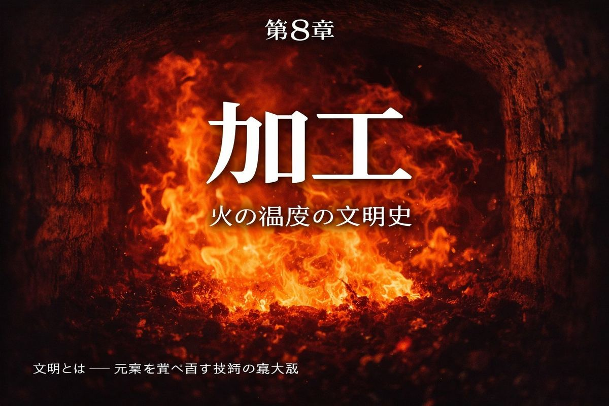
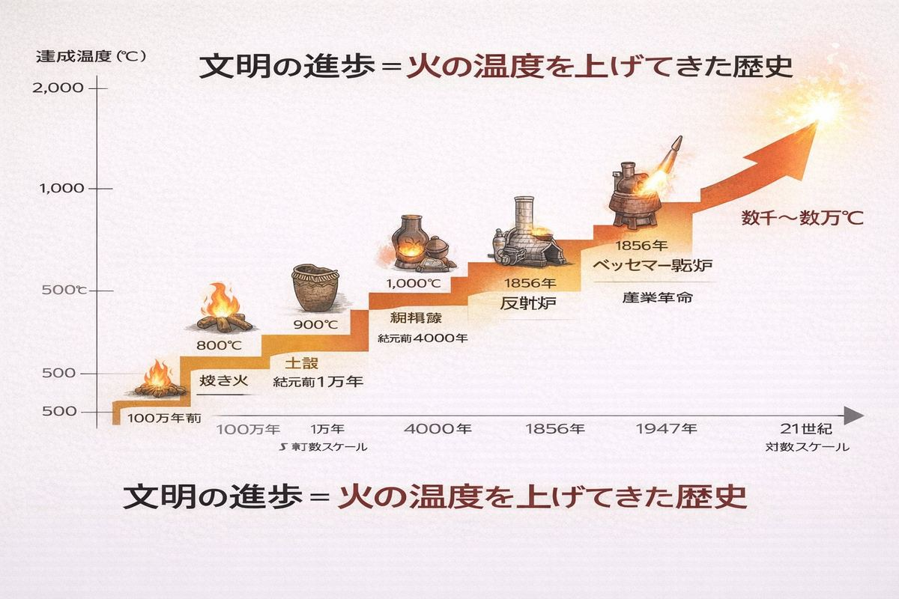
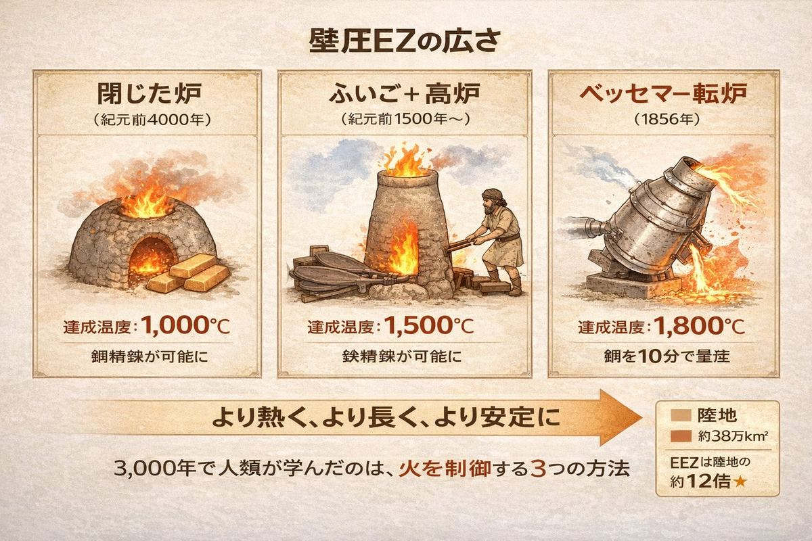
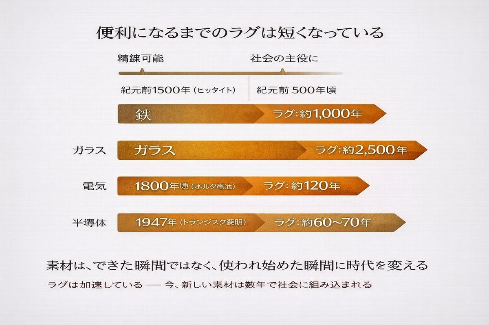
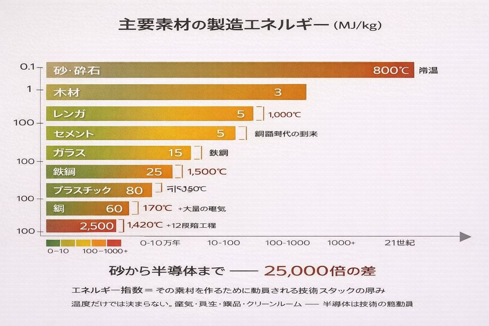
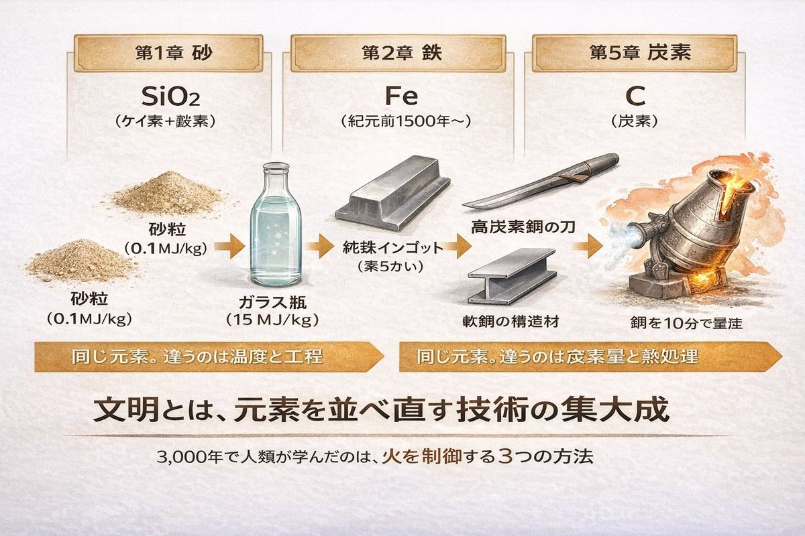
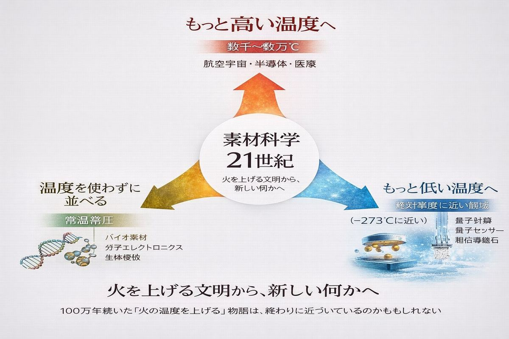

火を制する者は、世界を制する。 ── 出典不明（しかし火を扱った人類すべてに共通する直観）
A. 鉱石の存在量 B. 鋳造技術の有無 C. 扱える温度の上限
正解はC。
青銅は約1,000℃で溶ける。鉄は1,500℃以上必要だ。たった500℃の差だが、この差を埋めるために人類は1,000年以上を要した。鉱石が多いか少ないかではない。技術が「鋳造」を持っているかでもない。より高い温度を、より長く、安定して維持できる炉を作れたかどうかだ。
文明の歴史は、しばしば「使った素材の名前」で区分される。石器時代、青銅器時代、鉄器時代、シリコン時代。しかし、その名前の裏側には常に、別の指標が隠れている。
人類が制御できる火の温度。
これがすべての文明区分の本当の主役だ。
人類が扱える火の温度を、時代ごとに並べてみる。

| 時代 | 用途 | 達成温度 |
|---|---|---|
| 100万年前 | 焚き火（料理・暖房） | 約 600〜800℃ |
| 1万年前 | 土器を焼く（縄文土器） | 約 800〜900℃ |
| 紀元前4000年頃 | 銅の精錬 | 約 1,000〜1,100℃ |
| 紀元前2000年頃 | 青銅の鋳造 | 約 1,100℃ |
| 紀元前1500年頃 | 鉄の精錬（ヒッタイト） | 約 1,200〜1,500℃ |
| 1700年頃 | 反射炉での鋳鉄 | 約 1,400℃ |
| 1856年 | ベッセマー転炉での鋼 | 約 1,800℃ |
| 20世紀前半 | アルミニウム電解精錬 | 約 950℃（電気） |
| 20世紀後半 | 半導体シリコンの単結晶引き上げ | 約 1,420℃ |
| 21世紀 | プラズマ・レーザー加工 | 数千〜数万℃ |
横に並べると見えてくる。温度が上がるごとに、新しい素材が文明に加わってきた。
100万年前に火を扱えるようになって、料理ができた。900℃に届くと土器が焼けた。1,000℃を超えると銅が出てきた。1,500℃を超えると鉄が出てきた。それぞれの時代は、その時代に到達できた最高温度の関数だ。
教科書は「銅器時代」「青銅器時代」「鉄器時代」と素材の名前で区分する。しかし、これは結果論にすぎない。実際に文明を駆動していたのは、火を「より熱く、より長く、より安定に」維持する技術だった。
なぜ温度を上げるのが難しいのか。物理を簡単に振り返る。

火（燃焼）の温度は、燃料と酸素の供給量、そして熱が逃げない構造によって決まる。木を野外で燃やすと600〜800℃が限界だ。これは、燃焼で発生した熱が周囲の空気に拡散してしまい、安定しないからだ。
これを上げる方法は2つある。
1. 燃料を変える。 薪より木炭。木炭より石炭。石炭よりコークス。同じ重量で発生する熱量が増えていく。
2. 構造を変える。 開放的な焚き火から、土で囲った窯へ。窯から、煙突付きの炉へ。さらに、空気を強制的に送り込む「ふいご」を付ければ、燃焼速度が上がり、温度も上がる。
紀元前4000年頃、人類は最初の「閉じた炉」を発明した。これによって1,000℃を超える温度が安定して得られるようになり、銅の精錬が可能になった。
紀元前1500年頃、ヒッタイト人は「ふいご」と「特殊な炉構造」の組み合わせで1,200〜1,500℃を達成し、鉄を取り出すことに成功した。これが鉄器時代の幕開けだった。
そして1856年、ヘンリー・ベッセマーは「溶けた銑鉄に空気を直接吹き込む」という発想で、外部から熱を加えずに鋼の温度を1,800℃まで上げる方法を見つけた。これが第2章で見たベッセマー転炉だ。
各時代の技術革命は、すべて温度の壁を破る発明だった。
ところが面白いことに、新しい素材ができてから、それが社会で本格的に使われるまでには、いつも長い時間がかかる。

鉄が初めて精錬されたのは紀元前1500年頃のヒッタイトだが、鉄が農業や建築の主役になるのは数百年後のローマ帝国期だ。ガラスはエジプトで紀元前1500年頃に作られ始めたが、窓ガラスとして広まるのは中世以降。
なぜか。理由は単純だ。素材ができるだけでは何にもならない。それを使いこなす別の技術が、素材の後を追って発明される必要がある。
鉄を精錬できても、それを刀に鍛える技術がなければ武器にならない。鋳型を作る技術がなければ農具にならない。鉄を使うインフラ全体が整って初めて、鉄器時代が「始まった」と言える。
シリコン半導体も同じだった。1947年にトランジスタが発明されてから、それが日常生活を変えるまでには30年以上かかった。1980年代のパソコン革命、2000年代のインターネット、2010年代のスマートフォン。最初の発明から実用品としての普及までに、半世紀以上のラグがある。
素材は、できた瞬間ではなく、使われ始めた瞬間に時代を変える。
教科書が「青銅器時代」「鉄器時代」と区分するとき、その「時代」はだいたい素材ができてから300〜500年後に始まっている。ラグの大きさは、文明の構造の柔らかさによる。古代より中世が、中世より近代が、ラグは短くなる傾向がある。21世紀の今、新しい素材は数年で社会に組み込まれる。
加速している。これは良いニュースか、悪いニュースか、判断が難しい。
第1章で見た製造エネルギーの表を、もう一度ここに置く。

| 素材 | 製造エネルギー (MJ/kg) | 必要温度 |
|---|---|---|
| 砂・砕石 | 0.1 | 常温 |
| 木材 | 3 | 常温 |
| レンガ | 5 | 約 1,000℃ |
| セメント | 5 | 約 1,450℃ |
| ガラス | 15 | 約 1,500℃ |
| 鉄鋼 | 25 | 約 1,500℃ |
| プラスチック | 80 | 約 200〜300℃（化学反応） |
| アルミニウム | 170 | 電解（約 950℃） |
| 半導体シリコン | 2,500 | 約 1,420℃ + 12段階工程 |
砂から半導体までの差は25,000倍。
ただし「温度」と「エネルギー指数」は同じものではない。アルミニウムの精錬温度は950℃と鉄より低いが、エネルギー指数は170 MJ/kgと鉄の7倍だ。なぜか。アルミは熱ではなく電気で精錬するからだ。酸化アルミニウムを電気分解して金属アルミを取り出すには、莫大な電力が必要になる。
つまり「火の温度」は文明史の前半を駆動したが、20世紀以降は「電気の量」が新しい主役になっている。半導体シリコンに至っては、温度・電気・真空・薬品・クリーンルームすべてを総動員する。1グラムを作るのに、人類が知っているほぼすべての精密技術が必要になる。
エネルギー指数は、「人類がその素材を作るためにどれだけの技術スタックを動員する必要があるか」の総合点と言ってもいい。砂の0.1 MJ/kgから半導体の2,500 MJ/kgまでの差は、文明の技術的厚みの差そのものだ。
これまで本書で見てきた章を、温度の視点で振り返ってみる。

第1章 砂。 同じSiO₂が、加工温度0.1 MJ/kg（掘って混ぜるだけ）から2,500 MJ/kg（半導体）まで、9桁の幅を持っていた。違いは温度と工程の数だけ。元素は同じ。
第2章 鉄。 純鉄は柔らかいが、炭素を0.04%加えて加熱・冷却する温度サイクルを変えるだけで、軟鋼にも刃物用高炭素鋼にも鋳鉄にもなる。元素はほぼ同じ。違いは温度の操作だけ。
第5章 炭素。 鉛筆の芯（黒鉛）も指輪のダイヤモンドも100%炭素。違いは結晶を作るときの温度と圧力だけ。グラフェンは黒鉛から1原子層を剥がしただけ。フラーレンは炭素を超高温の蒸気にして冷却すると勝手にできる。
第6章 レアアース。 17兄弟の分離は、化学的な性質の差ではなく、温度・濃度・時間の微妙な制御の繰り返しで行われる。何百回、何千回と。
すべて、同じ元素を違うふうに並べ直す技術だ。違いは「温度をどう扱うか」に集約される。
人類は元素を新しく作っているわけではない。地球にある118種類の元素を、いろいろな温度・圧力・時間の組み合わせで並べ直しているだけだ。それが「加工」と呼ばれる行為であり、「文明」と呼ばれるシステムの正体だ。
では、私たちは今、どこにいるのだろうか。

21世紀の素材科学は、3つの方向に進んでいる。
1. もっと高い温度へ。 プラズマ加工、レーザー加工、放電加工。数千〜数万℃の局所的な温度を、1秒未満の時間スケールで制御する技術。航空宇宙、半導体、医療機器に不可欠だ。
2. もっと低い温度へ。 超伝導、量子コンピュータ、極低温物理。絶対零度（マイナス273℃）に近い温度で、物質が新しい振る舞いを始める領域の探求。マイナスの方向にも「温度の壁」がある。
3. 温度を使わずに並べる。 自己組織化、生体模倣、分子マシン。生命が常温常圧でDNAやタンパク質を組み立てているのと同じ原理を、人工物に応用する。「火を使わない加工」の追求だ。
火の温度を上げるという100万年続いた物語は、もしかすると終わりに近づいているのかもしれない。次の文明は、温度ではない別の何かを軸にする可能性がある。
加工とは何か。素材を「形を変える」ことだ。しかし、それは表面の話だ。本質は、元素の並び方を変えることにある。
砂を半導体に変えるのは、SiO₂の純度を上げることだ。鉄を鋼に変えるのは、炭素原子を均一に分散させることだ。グラフェンを作るのは、炭素原子を平面に整列させることだ。レアアース17兄弟を分けるのは、似たもの同士を一つずつ別の容器に入れていくことだ。
すべて「並べ直し」だ。
そしてこの「並べ直す」作業のために、人類は10万年かけて火の温度を上げ、機械を発明し、化学反応を制御し、電気を使い、量子力学を学び、計算機を作ってきた。文明とは、要するに元素を並べ直す技術の集大成だ。
私たちは新しい元素を作っているのではない。地球の構成成分を、別の順序で並べ直しているだけだ。それが「進歩」と呼ばれているものの正体だ。
そう考えると、文明は驚くほど謙虚な営みに見えてくる。地球が46億年かけて作った元素を借りて、人類はこの数千年でほんの少しだけ並べ替えている。並べ替え方の選択肢は、本当は無数にある。
私たちは、まだそのほんの一部しか試していない。
【インタラクティブ図鑑で見る】 素材ごとの加工温度・エネルギー指数は、図鑑の「加工難易度」セクションで対数スケールで比較できます： 🔗 https://osakenpiro.github.io/materials-of-civilization/
次章予告 第9章「掘れない資源 ── ものすごく新しくてありえないほど古い」 Q: 21世紀の「新しい資源」は、本当に新しいのか？ 実は構造はすべて、古い資源の物語の再演かもしれない。